(click to enlarge)
Introduction
The configuration properties that describe dynamic objects in Torque 3D are stored in information structures called datablocks. The T3D Datablock Editor is used to quickly and easily change any parameter of any datablock from within the world Editor.
Setup
From the T3D Toolbox, select your project and load the Empty Terrain level. Once T3D loads, open the world editor (F11) if it is not open already.
Interface
To switch to the Datablock Editor press the F6 key or from the main menu select Editors > Datablock Editor.
menu>Editors> Datablock Editor
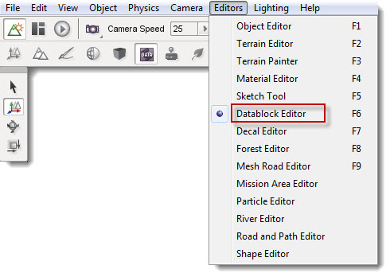
Or alternately click the Datablock icon from the World Editor toolbar.
The Datablock editor has two components: the Datablock Library pane and the Datablock properties pane. These panes appear at the right of the screen whenever the Datablock Editor is active. The Datablock Library pane is further divided into two tabs. The first, labelled Existing, contains a categorized list of all the existing datablocks. The second, labelled New, is used to create new instances of those datablocks.
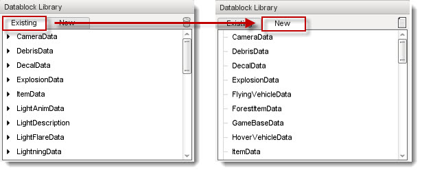
Clicking any existing datablock will cause the Datablock properties pane to update to display the current properties of that datablock.
The image below shows the selection of the DefaultCar datablock, under the WheeledVehicleData category. This datablock contains variables related to vehicle performance.
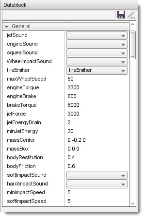
Creating a new Datablock
Creating a new datablock can be done by creating a copy from an already existing datablock. To do so first select the New tab in the Datablock Library pane.
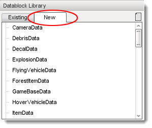
Then choose the type of datablock you wish to create from the list. Then press the New icon.
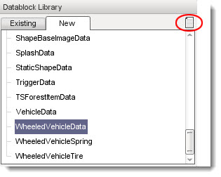
You will be presented with a new window giving you the option to name the new datablock and to copy values from one of the existing instances of the datablock type, if you want to. For example, in this scenario the DefaultCar datablock would be available in the dropdown box because it already exists at the time when creating a new datablock.
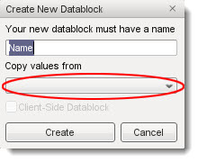
After clicking the Create button a new copy of the datablock will be added to the library, under the datablock type you first selected. In this example, you will create a new WheeledVehicleData datablock and name the new version "raceCar". This new version can now be found in the Library, under the Existing tab, in the WheeledVehicleData section.
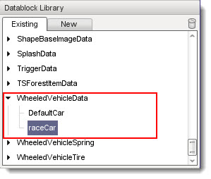
Saving a Datablock
After editing the new datablock or any other datablock, you will need to save it. You will see a small "*" in the header of the properties right after the Datablock label if the datablock needs saving.
Click the small floppy disk icon to save your datablock changes.
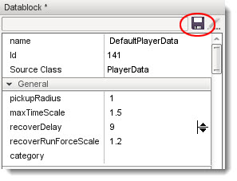
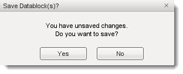
Note: Any new datablock which has been saved will be added into the managedDatablocks.cs document which can be found at the location: project\game\art\datablocks\ for your scripters to access later.
Deleting a Datablock
If you no longer need a datablock you can easily delete it by selecting the Delete icon.

After pressing this icon you will get a notification window stating that
the datablock has been removed.
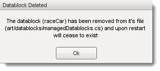
The World Builder will need to be restarted to completely remove the file.
Properties
Let's take a quick look at an example datablock from the library, to get an understanding of how you can work with a datablock's properties.
Select the DefaultPlayerData datablock in the PlayerData section. Now you have access to all of the data associated with the demo player character that comes with Torque 3D (his name is Gideon). From here you can change how the he moves, jumps, interacts with objects, his physics, etc.
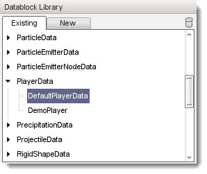
Below is a list of some of the properties in the DefaultPlayerData datablock.
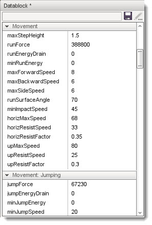
For example, if you wanted to increase the maximum number of rockets carried by Gideon, you would change the maxInvRocketLauncherAmmo value. Update the value to 600.
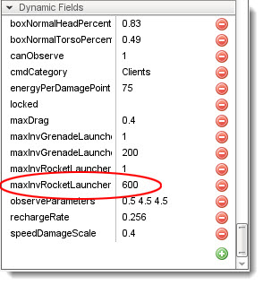
The next time you close down the editor, by pressing the F11 key or by any other method, and test the game level, your character will carry more ammo.
Take some time to explore the datablocks in the library, look through their properties and get a feel for how they can be used in your project. Try changing a few settings and see how this will affect the object's performance. A little experimenting early on will save you time when you develop a project later.
Conclusion
This article has covered the Datablock Editor and how it can be used to speed up your project development by adjusting object properties from within the Torque 3D World Editor. You can now make in-game adjustments on-the-fly without resorting to scripting.
Don't forget to save your level! |
{kind=link}